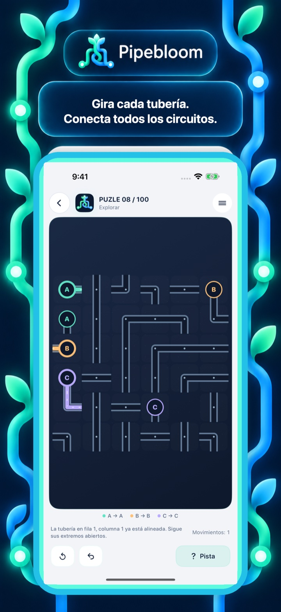
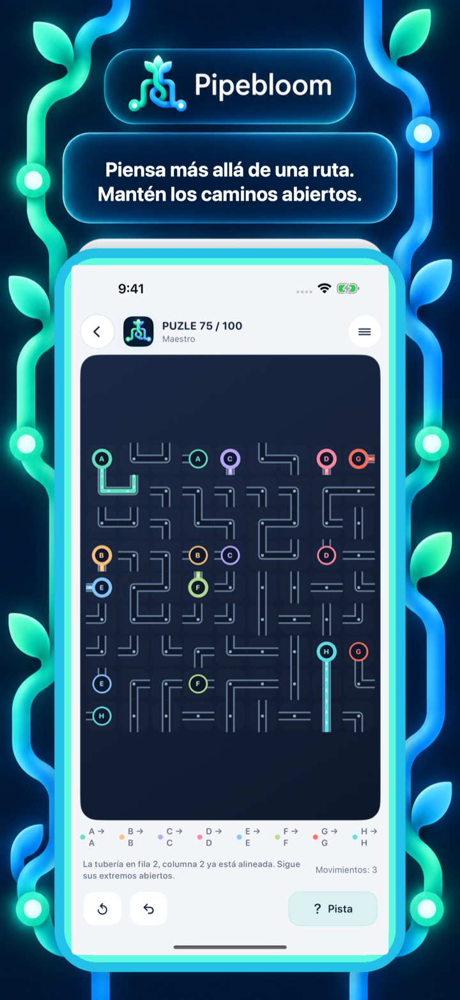
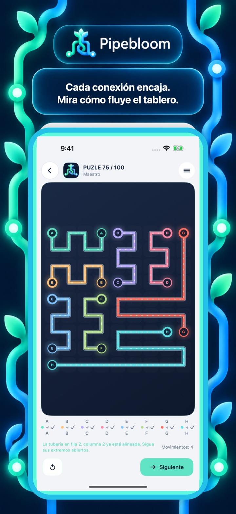
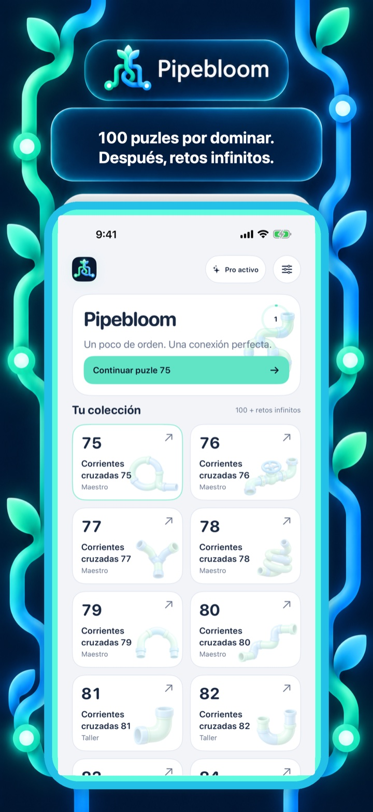

100 puzles seleccionados
Una progresión diseñada con profundidad lógica o espacial creciente.
Pipebloom
Convierte cada pieza en parte de una red continua.
Próximamente en el App Store

Mira la idea en movimiento
Los primeros puzles permiten entender el flujo de un vistazo. Más adelante tendrás que pensar en todo el tablero: una conexión que parece evidente puede bloquear la única ruta disponible para otro circuito.
Mundos de puzle
Cada juego comienza con una colección cuidada de 100 puzles. Al terminarla, los retos infinitos mantienen abiertas las mismas reglas para plantear nuevos problemas.
Una progresión diseñada con profundidad lógica o espacial creciente.
Sigue explorando después de completar la colección principal.
Piensa, prueba, deshaz y aprende a tu ritmo.
Dentro del juego
Las cuatro vistas siguen la secuencia aprobada del App Store: mecánica principal, puzle más profundo, estado resuelto y colección.



Gratis para jugar. Pro cuando quieras.
El juego es gratuito. La versión gratuita puede mostrar un anuncio intersticial tras determinados puzles completados y permite ver un anuncio recompensado para obtener una pista.
La mejora Pro, de pago único, elimina los anuncios y ofrece pistas directamente.
Descubre otro mundo de puzle
Cambia de mecánica sin salir de la colección.